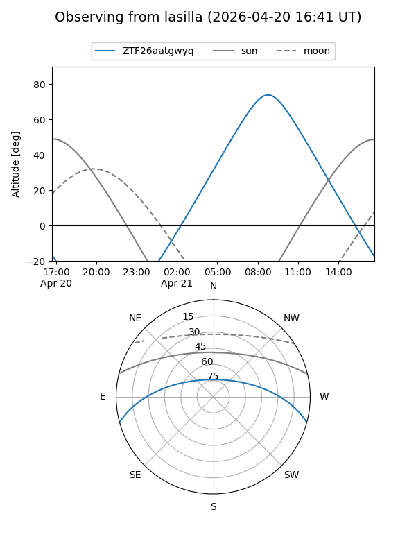
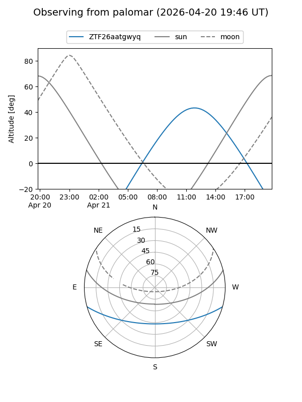

ZTF26aatgwyq
Target ZTF26aatgwyq at 2026-04-20 20:42
Aliases and brokers:
FINK: link
Lasair: link
ALeRCE: link
alt names
ZTF26aatgwyq (ztf,fink_ztf)
Coordinates:
equatorial (ra, dec) = 269.9736,-13.29489
equatorial (HMS+DMS) = 17:59:53.67,-13:17:41.62
galactic (l, b) = (15.1847,+5.06564)
Flags:
Photometry:
last ztfg=15.79
2 ztfg detections
Lightcurve
Visibility


Additional plots